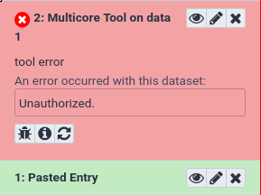

Mapping Jobs to Destinations

 Nate Coraor
Nate Coraor Björn Grüning
Björn Grüning Helena Rasche
Helena RascheOverviewQuestions:Objectives:
How can I configure job dependent resources, like cores, memory for my DRM?
How can I map jobs to resources and destinations
Requirements:
Know how to map tools to job destinations
Be able to use the dynamic job runner to make arbitrary destination mappings
Understand the job resource selector config and dynamic rule creation
The various ways in which tools can be mapped to destinations, both statically and dynamically
How to write a dynamic tool destination (DTD)
How to write a dynamic python function destination
How to use the job resource parameter selection feature
- Galaxy Server administration
- Ansible: slides slides - tutorial hands-on
- Galaxy Installation with Ansible: slides slides - tutorial hands-on
- Connecting Galaxy to a compute cluster: slides slides - tutorial hands-on
Time estimation: 2 hoursSupporting Materials:Last modification: Jan 24, 2023
 Questions:
Questions:
This tutorial heavily builds on the Connecting Galaxy to a compute cluster and it’s expected you have completed this tutorial first.
Now that you have a working scheduler, we will start configuring which jobs are sent to which destinations.
Comment: Results may varyYour results may be slightly different from the ones presented in this tutorial due to differing versions of tools, reference data, external databases, or because of stochastic processes in the algorithms.
Agenda
Comment: Galaxy Admin Training PathThe yearly Galaxy Admin Training follows a specific ordering of tutorials. Use this timeline to help keep track of where you are in Galaxy Admin Training.
Galaxy and Slurm - Statically Mapping a Job
We don’t want to overload our training VMs trying to run real tools, so to demonstrate how to map a multicore tool to a multicore destination, we’ll create a fake tool.
Writing a testing tool
Hands-on: Deploying a Tool
Create the directory
files/galaxy/tools/if it doesn’t exist and edit a new file infiles/galaxy/tools/testing.xmlwith the following contents:--- /dev/null +++ b/files/galaxy/tools/testing.xml @@ -0,0 +1,11 @@ +<tool id="testing" name="Testing Tool"> + <command> + <![CDATA[echo "Running with '\${GALAXY_SLOTS:-1}' threads" > "$output1"]]> + </command> + <inputs> + <param name="input1" type="data" format="txt" label="Input Dataset"/> + </inputs> + <outputs> + <data name="output1" format="txt" /> + </outputs> +</tool>If you haven’t worked with diffs before, this can be something quite new or different.
If we have two files, let’s say a grocery list, in two files. We’ll call them ‘a’ and ‘b’.
Input: Old$ cat old
üçé
üçê
üçä
üçã
üçí
ü•ëOutput: New$ cat new
üçé
üçê
üçä
üçã
üçç
ü•ëWe can see that they have some different entries. We‚Äôve removed üçí because they‚Äôre awful, and replaced them with an üçç
Diff lets us compare these files
$ diff old new
5c5
< üçí
---
> üççHere we see that üçí is only in a, and üçç is only in b. But otherwise the files are identical.
There are a couple different formats to diffs, one is the ‘unified diff’
$ diff -U2 old new
--- old 2022-02-16 14:06:19.697132568 +0100
+++ new 2022-02-16 14:06:36.340962616 +0100
@@ -3,4 +3,4 @@
üçä
üçã
-üçí
+üçç
ü•ëThis is basically what you see in the training materials which gives you a lot of context about the changes:
--- oldis the ‘old’ file in our view+++ newis the ‘new’ file- @@ these lines tell us where the change occurs and how many lines are added or removed.
- Lines starting with a - are removed from our ‘new’ file
- Lines with a + have been added.
So when you go to apply these diffs to your files in the training:
- Ignore the header
- Remove lines starting with - from your file
- Add lines starting with + to your file
The other lines (üçä/üçã and ü•ë) above just provide ‚Äúcontext‚Äù, they help you know where a change belongs in a file, but should not be edited when you‚Äôre making the above change. Given the above diff, you would find a line with a üçí, and replace it with a üçç
Added & Removed Lines
Removals are very easy to spot, we just have removed lines
--- old 2022-02-16 14:06:19.697132568 +0100
+++ new 2022-02-16 14:10:14.370722802 +0100
@@ -4,3 +4,2 @@
üçã
üçí
-ü•ëAnd additions likewise are very easy, just add a new line, between the other lines in your file.
--- old 2022-02-16 14:06:19.697132568 +0100
+++ new 2022-02-16 14:11:11.422135393 +0100
@@ -1,3 +1,4 @@
üçé
+üçç
üçê
üçäCompletely new files
Completely new files look a bit different, there the “old” file is
/dev/null, the empty file in a Linux machine.$ diff -U2 /dev/null old
--- /dev/null 2022-02-15 11:47:16.100000270 +0100
+++ old 2022-02-16 14:06:19.697132568 +0100
@@ -0,0 +1,6 @@
+üçé
+üçê
+üçä
+üçã
+üçí
+ü•ëAnd removed files are similar, except with the new file being /dev/null
--- old 2022-02-16 14:06:19.697132568 +0100
+++ /dev/null 2022-02-15 11:47:16.100000270 +0100
@@ -1,6 +0,0 @@
-üçé
-üçê
-üçä
-üçã
-üçí
-ü•ëAdd the tool to the Galaxy group variables under the new item
galaxy_local_tools:--- a/group_vars/galaxyservers.yml +++ b/group_vars/galaxyservers.yml @@ -96,6 +96,9 @@ galaxy_config_templates: - src: templates/galaxy/config/dependency_resolvers_conf.xml dest: "{{ galaxy_config.galaxy.dependency_resolvers_config_file }}" +galaxy_local_tools: +- testing.xml + # systemd galaxy_manage_systemd: true galaxy_systemd_env: [DRMAA_LIBRARY_PATH="/usr/lib/slurm-drmaa/lib/libdrmaa.so.1"]Run the Galaxy playbook.
Input: Bashansible-playbook galaxy.ymlReload Galaxy in your browser and the new tool should now appear in the tool panel. If you have not already created a dataset in your history, upload a random text dataset. Once you have a dataset, click the tool’s name in the tool panel, then click Execute.
QuestionWhat is the tool’s output?
Running with '1' threads
1.sh
Of course, this tool doesn’t actually use the allocated number of cores. In a real tool, you would call the tools’s underlying command with whatever flag that tool provides to control the number of threads or processes it starts, such as samtools sort -@ \${GALAXY_SLOTS:-1}.
Running with more resources
We want our tool to run with more than one core. To do this, we need to instruct Slurm to allocate more cores for this job. This is done in the job configuration file.
Hands-on: Allocating more resources
Edit your
templates/galaxy/config/job_conf.yml.j2and add the following destination. Then, map the new tool to the new destination using the tool ID (<tool id="testing">) and destination id (<destination id="slurm-2c">) by adding a new section to the job config,<tools>, below the destinations:--- a/templates/galaxy/config/job_conf.yml.j2 +++ b/templates/galaxy/config/job_conf.yml.j2 @@ -20,6 +20,17 @@ execution: value: /tmp/singularity - name: SINGULARITY_TMPDIR value: /tmp + slurm-2c: + runner: slurm + singularity_enabled: true + native_specification: --nodes=1 --ntasks=1 --cpus-per-task=2 + env: + - name: LC_ALL + value: C + - name: SINGULARITY_CACHEDIR + value: /tmp/singularity + - name: SINGULARITY_TMPDIR + value: /tmp singularity: runner: local_runner singularity_enabled: true @@ -37,3 +48,5 @@ execution: tools: - class: local # these special tools that aren't parameterized for remote execution - expression tools, upload, etc environment: local_dest +- id: testing + environment: slurm-2cRun the Galaxy playbook. Because we modified
job_conf.yml, Galaxy will be restarted to reread its config files.Input: Bashansible-playbook galaxy.ymlClick the rerun button on the last history item, or click Testing Tool in the tool panel, and then click the tool’s Run Tool button.
QuestionWhat is the tool’s output?
Running with '2' threads
2.sh
Dynamic Job Destinations
Dynamic destinations allow you to write custom python code to dispatch jobs based on whatever rules you like. For example, UseGalaxy.eu at one point used a very complex custom dispatching configuration to handle sorting jobs between multiple clusters. Galaxy has extensive documentation on how to write these sort of destinations.
Hands-on: Writing a dynamic job destination
Create and open
files/galaxy/dynamic_job_rules/my_rules.py--- /dev/null +++ b/files/galaxy/dynamic_job_rules/my_rules.py @@ -0,0 +1,10 @@ +from galaxy.jobs import JobDestination +from galaxy.jobs.mapper import JobMappingException +import os + +def admin_only(app, user_email): + # Only allow the tool to be executed if the user is an admin + admin_users = app.config.get( "admin_users", "" ).split( "," ) + if user_email not in admin_users: + raise JobMappingException("Unauthorized.") + return JobDestination(runner="slurm")This destination will check that the
user_emailis in the set ofadmin_usersfrom your config file.You can use
pdbfor more advanced debugging, but it requires some configuration.print()statements are usually sufficient and easier.As usual, we need to instruct Galaxy of where to find this file:
Edit your group variables file and add the following:
--- a/group_vars/galaxyservers.yml +++ b/group_vars/galaxyservers.yml @@ -98,6 +98,8 @@ galaxy_config_templates: galaxy_local_tools: - testing.xml +galaxy_dynamic_job_rules: +- my_rules.py # systemd galaxy_manage_systemd: trueWe next need to configure this plugin in our job configuration:
--- a/templates/galaxy/config/job_conf.yml.j2 +++ b/templates/galaxy/config/job_conf.yml.j2 @@ -44,6 +44,9 @@ execution: # Singularity uses a temporary directory to build the squashfs filesystem - name: SINGULARITY_TMPDIR value: /tmp + dynamic_admin_only: + runner: dynamic + function: admin_only tools: - class: local # these special tools that aren't parameterized for remote execution - expression tools, upload, etcThis is a Python function dynamic destination. Galaxy will load all python files in the
{{ galaxy_dynamic_rule_dir }}, and all functions defined in those will be availablemy_rules.pyto be used in thejob_conf.ymlFinally, in
job_conf.yml, update the<tool>definition and point it to this destination:--- a/templates/galaxy/config/job_conf.yml.j2 +++ b/templates/galaxy/config/job_conf.yml.j2 @@ -52,4 +52,4 @@ tools: - class: local # these special tools that aren't parameterized for remote execution - expression tools, upload, etc environment: local_dest - id: testing - environment: slurm-2c + environment: dynamic_admin_onlyRun the Galaxy playbook.
Input: Bashansible-playbook galaxy.ymlTry running the tool as both an admin user and a non-admin user, non-admins should not be able to run it. You can start a private browsing session to test as a non-admin, anonymous user. Anonymous users were enabled in your Galaxy configuration.

You can imagine extending this to complex logic for permissions, or for destination mapping depending on numerous factors. We did not cover it, but in the documentation you can add additional variables to your function signature, and they will be automatically supplied. Some useful variables are tool, user, job, and app if you need to load configuration information, and more can be found in the documentation.
Dynamically map a tool to a job destination
If you don’t want to write dynamic destinations yourself, Dynamic Tool Destinations (DTDs) utilize the dynamic job runner to provide dynamic job mapping functionality without having to explicitly write code to perform the mapping. The mapping functionality is mostly limited to input sizes, but often input size is the most important factor in deciding what resources to allocate for a job.
Writing a Dynamic Tool Destination
Hands-on: Writing a DTD
Dynamic tool destinations are configured via a YAML file. As before, we’ll use a fake example but this is extremely useful in real-life scenarios. Create the file
templates/galaxy/config/tool_destinations.ymlwith the following contents:--- /dev/null +++ b/templates/galaxy/config/tool_destinations.yml @@ -0,0 +1,11 @@ +--- +tools: + testing: + rules: + - rule_type: file_size + lower_bound: 16 + upper_bound: Infinity + destination: slurm-2c + default_destination: slurm +default_destination: slurm +verbose: TrueThe rule says:
- If the tool has ID
testing:
- If the input dataset is >=16 bytes, run on the destination
slurm-2c- If the input dataset is <16 bytes, run on the destination
slurm- Else, run on the destination
slurmWe also need to inform Galaxy of the path to the file we’ve just created, which is done using the
tool_destinations_config_fileingalaxy_config>galaxy. Additionally we need to add agalaxy_config_templatesentry to ensure it is deployed.--- a/group_vars/galaxyservers.yml +++ b/group_vars/galaxyservers.yml @@ -29,6 +29,7 @@ miniconda_manage_dependencies: false galaxy_config: galaxy: + tool_destinations_config_file: "{{ galaxy_config_dir }}/tool_destinations.yml" library_import_dir: /libraries/admin user_library_import_dir: /libraries/user dependency_resolvers_config_file: "{{ galaxy_config_dir }}/dependency_resolvers_conf.xml" @@ -95,6 +96,8 @@ galaxy_config_templates: dest: "{{ galaxy_config.galaxy.containers_resolvers_config_file }}" - src: templates/galaxy/config/dependency_resolvers_conf.xml dest: "{{ galaxy_config.galaxy.dependency_resolvers_config_file }}" + - src: templates/galaxy/config/tool_destinations.yml + dest: "{{ galaxy_config.galaxy.tool_destinations_config_file }}" galaxy_local_tools: - testing.xmlWe need to update Galaxy’s job configuration to use this rule. Open
templates/galaxy/config/job_conf.yml.j2and add a DTD destination. Also, comment out or remove the previous<tool>definition for thetestingtool, and replace it with a mapping to the dtd destination like so:--- a/templates/galaxy/config/job_conf.yml.j2 +++ b/templates/galaxy/config/job_conf.yml.j2 @@ -47,9 +47,12 @@ execution: dynamic_admin_only: runner: dynamic function: admin_only + dtd: + runner: dynamic + type: dtd tools: - class: local # these special tools that aren't parameterized for remote execution - expression tools, upload, etc environment: local_dest - id: testing - environment: dynamic_admin_only + environment: dtdRun the Galaxy playbook.
Input: Bashansible-playbook galaxy.yml
Testing the DTD
Our rule specified that any invocation of the testing tool with an input dataset with size <16 bytes would run on the 1 core destination, whereas any with >= 16 bytes would run on the 2 core destination.
Hands-on: Testing the DTD
Create a dataset using the upload paste tool with a few (<16) characters
Create a dataset using the upload paste tool with >16 characters
Run the
Testing Toolon both datasets.
3.sh
You can imagine using this to run large blast jobs on compute hardware with more resources, or giving them more CPU cores. Some tools require more memory as job inputs increase, you can use this to run tools with a larger memory limit, if you know it will need it to process a certain size of inputs.
Job Resource Selectors
You may find that certain tools can benefit from having form elements added to them to allow for controlling certain job parameters, so that users can select based on their own knowledge. For example, a user might know that a particular set of parameters and inputs to a certain tool needs a larger memory allocation than the standard amount for a given tool. This of course assumes that your users are well behaved enough not to choose the maximum whenever available, although such concerns can be mitigated somewhat by the use of concurrency limits on larger memory destinations.
Such form elements can be added to tools without modifying each tool’s configuration file through the use of the job resource parameters configuration file
Hands-on: Configuring a Resource Selector
Create and open
templates/galaxy/config/job_resource_params_conf.xml.j2--- /dev/null +++ b/templates/galaxy/config/job_resource_params_conf.xml.j2 @@ -0,0 +1,7 @@ +<parameters> + <param label="Cores" name="cores" type="select" help="Number of cores to run job on."> + <option value="1">1 (default)</option> + <option value="2">2</option> + </param> + <param label="Time" name="time" type="integer" size="3" min="1" max="24" value="1" help="Maximum job time in hours, 'walltime' value (1-24). Leave blank to use default value." /> +</parameters>This defines two resource fields, a select box where users can choose between 1 and 2 cores, and a text entry field where users can input an integer value from 1-24 to set the walltime for a job.
As usual, we need to instruct Galaxy of where to find this file:
--- a/group_vars/galaxyservers.yml +++ b/group_vars/galaxyservers.yml @@ -90,6 +90,8 @@ galaxy_config: - workflow-scheduler galaxy_config_templates: + - src: templates/galaxy/config/job_resource_params_conf.xml.j2 + dest: "{{ galaxy_config.galaxy.job_resource_params_file }}" - src: templates/galaxy/config/job_conf.yml.j2 dest: "{{ galaxy_config.galaxy.job_config_file }}" - src: templates/galaxy/config/container_resolvers_conf.xml.j2Next, we define a new section in
job_conf.yml:<resources>. This groups together parameters that should appear together on a tool form. Add the following section to yourtemplates/galaxy/config/job_conf.yml.j2:--- a/templates/galaxy/config/job_conf.yml.j2 +++ b/templates/galaxy/config/job_conf.yml.j2 @@ -51,6 +51,12 @@ execution: runner: dynamic type: dtd +resources: + default: default + groups: + default: [] + testing: [cores, time] + tools: - class: local # these special tools that aren't parameterized for remote execution - expression tools, upload, etc environment: local_destThe group ID will be used to map a tool to job resource parameters, and the text value of the
<group>tag is a comma-separated list ofnames fromjob_resource_params_conf.xmlto include on the form of any tool that is mapped to the defined<group>.Finally, in
job_conf.yml, move the previous<tool>definition for thetestingtool into the comment and define a new<tool>that defines theresourcesfor the tool:--- a/templates/galaxy/config/job_conf.yml.j2 +++ b/templates/galaxy/config/job_conf.yml.j2 @@ -61,4 +61,5 @@ tools: - class: local # these special tools that aren't parameterized for remote execution - expression tools, upload, etc environment: local_dest - id: testing - environment: dtd + environment: dynamic_cores_time + resources: testingWe have assigned the
testingtool to a new destination:dynamic_cores_time, but this destination does not exist. We need to create it. Add the following destination in your job conf:--- a/templates/galaxy/config/job_conf.yml.j2 +++ b/templates/galaxy/config/job_conf.yml.j2 @@ -50,6 +50,9 @@ execution: dtd: runner: dynamic type: dtd + dynamic_cores_time: + runner: dynamic + function: dynamic_cores_time resources: default: defaultThis will be another dynamic destination. Galaxy will load all python files in the
{{ galaxy_dynamic_rule_dir }}, and all functions defined in those will be availabledynamic_cores_timeto be used in thejob_conf.yml
This will set everything up to use the function. We have:
- A set of “job resources” defined which will let the user select the number of cores and walltime.
- A job configuration which says:
- that our testing tool should allow selection of the cores and time parameters
- directs it to use a new,
dynamic_cores_timedestination - and a has a new destination,
dynamic_cores_time, which is defined as a dynamic destination which will call a python function we will load.
This is a lot but we’re still missing the last piece for it to work:
A dynamic destination
Lastly, we need to write the rule that will read the value of the job resource parameter form fields and decide how to submit the job.
Hands-on: Writing a dynamic destination
Create and edit
files/galaxy/dynamic_job_rules/map_resources.py. Create it with the following contents:--- /dev/null +++ b/files/galaxy/dynamic_job_rules/map_resources.py @@ -0,0 +1,42 @@ +import logging +from galaxy.jobs.mapper import JobMappingException + +log = logging.getLogger(__name__) + +DESTINATION_IDS = { + 1 : 'slurm', + 2 : 'slurm-2c' +} +FAILURE_MESSAGE = 'This tool could not be run because of a misconfiguration in the Galaxy job running system, please report this error' + + +def dynamic_cores_time(app, tool, job, user_email): + destination = None + destination_id = 'slurm' + + # build the param dictionary + param_dict = job.get_param_values(app) + + if param_dict.get('__job_resource', {}).get('__job_resource__select') != 'yes': + log.info("Job resource parameters not seleted, returning default destination") + return destination_id + + # handle job resource parameters + try: + # validate params + cores = int(param_dict['__job_resource']['cores']) + time = int(param_dict['__job_resource']['time']) + destination_id = DESTINATION_IDS[cores] + destination = app.job_config.get_destination(destination_id) + # set walltime + if 'nativeSpecification' not in destination.params: + destination.params['nativeSpecification'] = '' + destination.params['nativeSpecification'] += ' --time=%s:00:00' % time + except: + # resource param selector not sent with tool form, job_conf.yml misconfigured + log.warning('(%s) error, keys were: %s', job.id, param_dict.keys()) + raise JobMappingException(FAILURE_MESSAGE) + + log.info('returning destination: %s', destination_id) + log.info('native specification: %s', destination.params.get('nativeSpecification')) + return destination or destination_idIt is important to note that you are responsible for parameter validation, including the job resource selector. This function only handles the job resource parameter fields, but it could do many other things - examine inputs, job queues, other tool parameters, etc.
As usual, we need to instruct Galaxy of where to find this file:
--- a/group_vars/galaxyservers.yml +++ b/group_vars/galaxyservers.yml @@ -29,6 +29,7 @@ miniconda_manage_dependencies: false galaxy_config: galaxy: + job_resource_params_file: "{{ galaxy_config_dir }}/job_resource_params_conf.xml" tool_destinations_config_file: "{{ galaxy_config_dir }}/tool_destinations.yml" library_import_dir: /libraries/admin user_library_import_dir: /libraries/user @@ -105,6 +106,7 @@ galaxy_local_tools: - testing.xml galaxy_dynamic_job_rules: - my_rules.py +- map_resources.py # systemd galaxy_manage_systemd: trueRun the Galaxy playbook.
Input: Bashansible-playbook galaxy.ymlRun the Testing Tool with various resource parameter selections
- Use default job resource parameters
- Specify job resource parameters:
- 1 core
- 2 cores
- Some value for walltime from 1-24
The cores parameter can be verified from the output of the tool. The walltime can be verified with scontrol:
Input: BashYour job number may be different.
scontrol show job 24
OutputYour output may look slightly different. Note that the
TimeLimitfor this job (which I gave a 12 hour time limit) was set to12:00:00.JobId=24 JobName=g24_multi_anonymous_10_0_2_2 UserId=galaxy(999) GroupId=galaxy(999) Priority=4294901747 Nice=0 Account=(null) QOS=(null) JobState=COMPLETED Reason=None Dependency=(null) Requeue=1 Restarts=0 BatchFlag=1 Reboot=0 ExitCode=0:0 RunTime=00:00:05 TimeLimit=12:00:00 TimeMin=N/A SubmitTime=2016-11-05T22:01:09 EligibleTime=2016-11-05T22:01:09 StartTime=2016-11-05T22:01:09 EndTime=2016-11-05T22:01:14 PreemptTime=None SuspendTime=None SecsPreSuspend=0 Partition=debug AllocNode:Sid=gat2016:1860 ReqNodeList=(null) ExcNodeList=(null) NodeList=localhost BatchHost=localhost NumNodes=1 NumCPUs=1 CPUs/Task=1 ReqB:S:C:T=0:0:*:* TRES=cpu=1,node=1 Socks/Node=* NtasksPerN:B:S:C=0:0:*:* CoreSpec=* MinCPUsNode=1 MinMemoryNode=0 MinTmpDiskNode=0 Features=(null) Gres=(null) Reservation=(null) Shared=OK Contiguous=0 Licenses=(null) Network=(null) Command=(null) WorkDir=/srv/galaxy/server/database/jobs/000/24 StdErr=/srv/galaxy/server/database/jobs/000/24/galaxy_24.e StdIn=StdIn=/dev/null StdOut=/srv/galaxy/server/database/jobs/000/24/galaxy_24.o Power= SICP=0
Comment: Got lost along the way?If you missed any steps, you can compare against the reference files, or see what changed since the previous tutorial.
If you’re using
gitto track your progress, remember to add your changes and commit with a good commit message!
Further Reading
- The sample dynamic tool destination config file fully describes the configuration language
- Dynamic destination documentation
- Job resource parameters are not as well documented as they could be, but the sample configuration file shows some of the possibilities.
- usegalaxy.org’s job_conf.yml is publicly available for reference.
- usegalaxy.eu’s job_conf.xml is likewise (see the
group_vars/galaxy.ymlresult)
Key points
Dynamic Tool Destinations are a convenient way to map
Job resource parameters can allow you to give your users control over job resource requirements, if they are knowledgeable about the tools and compute resources available to them.
Frequently Asked Questions
Have questions about this tutorial? Check out the tutorial FAQ page or the FAQ page for the Galaxy Server administration topic to see if your question is listed there. If not, please ask your question on the GTN Gitter Channel or the Galaxy Help ForumFeedback
Did you use this material as an instructor? Feel free to give us feedback on how it went.
Did you use this material as a learner or student? Click the form below to leave feedback.

Citing this Tutorial
- Nate Coraor, Björn Grüning, Helena Rasche, Mapping Jobs to Destinations (Galaxy Training Materials). https://training.galaxyproject.org/training-material/topics/admin/tutorials/job-destinations/tutorial.html Online; accessed TODAY
- Batut et al., 2018 Community-Driven Data Analysis Training for Biology Cell Systems 10.1016/j.cels.2018.05.012
Congratulations on successfully completing this tutorial!@misc{admin-job-destinations, author = "Nate Coraor and Björn Grüning and Helena Rasche", title = "Mapping Jobs to Destinations (Galaxy Training Materials)", year = "", month = "", day = "" url = "\url{https://training.galaxyproject.org/training-material/topics/admin/tutorials/job-destinations/tutorial.html}", note = "[Online; accessed TODAY]" } @article{Hiltemann_2023, doi = {10.1371/journal.pcbi.1010752}, url = {https://doi.org/10.1371%2Fjournal.pcbi.1010752}, year = 2023, month = {jan}, publisher = {Public Library of Science ({PLoS})}, volume = {19}, number = {1}, pages = {e1010752}, author = {Saskia Hiltemann and Helena Rasche and Simon Gladman and Hans-Rudolf Hotz and Delphine Larivi{\`{e}}re and Daniel Blankenberg and Pratik D. Jagtap and Thomas Wollmann and Anthony Bretaudeau and Nadia Gou{\'{e}} and Timothy J. Griffin and Coline Royaux and Yvan Le Bras and Subina Mehta and Anna Syme and Frederik Coppens and Bert Droesbeke and Nicola Soranzo and Wendi Bacon and Fotis Psomopoulos and Crist{\'{o}}bal Gallardo-Alba and John Davis and Melanie Christine Föll and Matthias Fahrner and Maria A. Doyle and Beatriz Serrano-Solano and Anne Claire Fouilloux and Peter van Heusden and Wolfgang Maier and Dave Clements and Florian Heyl and Björn Grüning and B{\'{e}}r{\'{e}}nice Batut and}, editor = {Francis Ouellette}, title = {Galaxy Training: A powerful framework for teaching!}, journal = {PLoS Comput Biol} Computational Biology} }